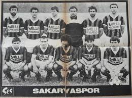
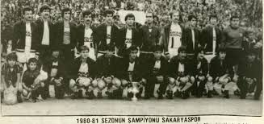

Sakaryaspor, Sakarya'da bulunan ve 1. Lig'de mücadele eden futbol kulübü. Adını şehre ismini veren Sakarya Nehri'nden almıştır.
17 Haziran 1965 tarihinde il merkezi Adapazarı'nda; İdman Yurdu, Ada Gençlik, Gençler Birliği, Güneşspor kulüplerinin birleşmesi ile Sakarya ilini, aynı yıl kurulan Türkiye 2. Futbol Ligi'nde temsil etmek amacıyla kurulmuştur.
1973-74 sezonunda 1. Lig'e çok yaklaşan ama Trabzonspor'a geçilen Sakaryaspor, 1980-81 sezonunda 2. Lig A Grubu şampiyonu olarak 1. Lig'e çıkmıştır.
| No | Mevki | Futbolcu |
|---|---|---|
| 35 | KL | Cihan Topaloğlu (Kaptan) |
| 13 | KL | İbrahim Demir |
| 99 | KL | Orhan Bostan |
| 3 | DF | Çağlayan Menderes |
| 12 | DF | Isaac Donkor |
| 33 | DF | Erdi Dikmen |
| 6 | DF | Bülent Uzun |
| 61 | DF | Bülent Cevahir |
| 70 | DF | Oğuz Yıldırım |
| 6 | OS | Rajko Rotman |
| 8 | OS | Sinan Kurt |
| 17 | OS | Murat Cem Akpınar |
| 20 | OS | Hasan Kılıç |
| 25 | OS | Nsana Simon |
| 10 | OS | Burak Süleyman |
| 45 | OS | Zdravko Dimitrov |
| 28 | OS | Yonathan Del Valle |
| 7 | OS | Bilal Başakçıoğlu |
| 22 | OS | Samed Onur Polat |
| 21 | OS | Odise Roshi |
| 72 | OS | Muhammed Himmet Ertürk |
| 4 | FV | Kabongo Kasongo |
| 19 | FV | Koray Kılınç |
| 9 | FV | Dino Ndiovu |